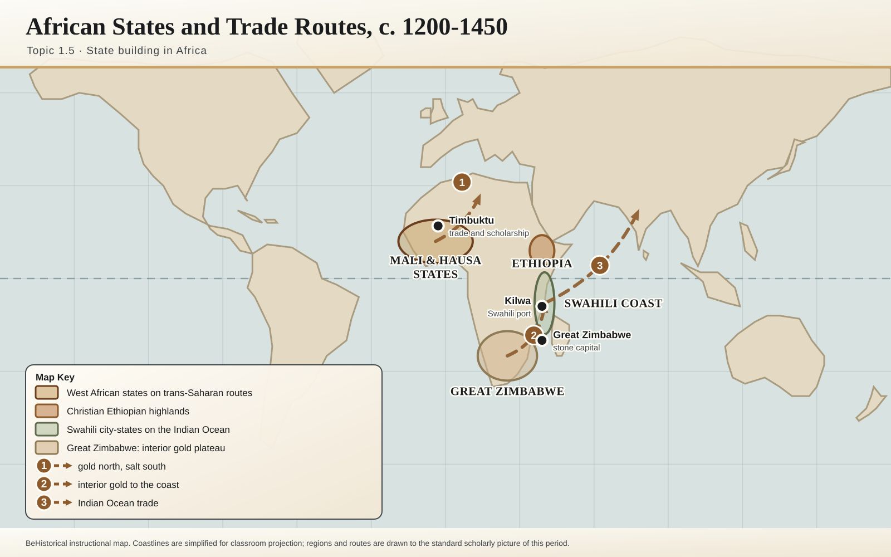

AP World History · Unit 1 · Topic 1.5
State Building in Africa
Governance, Trade, and Religion in Africa · c. 1200 to c. 1450
The Question
Why did different African states build power in completely different ways?
- Great Zimbabwe answered with gold and stone
- Ethiopia answered with descent and doctrine
- The Hausa kingdoms answered with law and literacy
Where in the World
Three states, one continent

Interior gold, moved to Sofala and the Indian Ocean
Highlands and the Red Sea trade routes
Savanna city-states astride trans-Saharan trade
Key Takeaway
Three different resources, three different states. Geography decided the starting materials.
How States Build Power
Five ingredients, three case studies
- Resources a state can control, gold, cattle, land
- Trade connecting it to wealth beyond its borders
- Religion or legitimacy justifying who rules
- Geographic position deciding what is available at all
- Labor or organization, the capacity to build and fight
Key Takeaway
Every case study today is some combination of these five, never all of them equally.
The Three Case Studies
Three states, one framework
Southern Africa
Great Zimbabwe
Gold and stone, resources plus organized labor
The Highlands
Ethiopia
Faith and descent, legitimacy that answers to no one
The Sahel
Hausa Kingdoms
Trade and law, an administration imported by choice
Key Takeaway
Same five ingredients. Three completely different recipes.
Part One
Great Zimbabwe
A city of stone, financed by cattle and gold, that took the trade and left the religion behind.
Case One · Southern Africa
The walls that needed no mortar

c. 1100 to 1450
Granite blocks, shaped and stacked with no mortar at all. Held by precision cutting and weight alone.
Key Takeaway
No document explains who built this. The wall is the document.
What Paid For It
Cattle, gold, and what was found in the ground
Cattle
Wealth, status, and a ruler's following
Gold
Mined on the plateau, sold through Sofala
Chinese celadon
Excavated at the site, in the fourteenth century
Persian glass
Proof of an Indian Ocean connection
Key Takeaway
Chinese pottery, buried in southern Africa. That is what “integration” looks like as evidence.
The Evidence, and Who Argued With It
Trade without conversion, and an answer denied for decades
What the trade did not do
No conversion
Deep in a Muslim-dominated trade network, Great Zimbabwe kept its own religious tradition, stone towers and carved soapstone birds.
1905 to the 1970s
An answer, denied
Excavation proved an African origin in 1905 and 1929. A government pressured historians to deny it for decades anyway.
Key Takeaway
Trade transmits religion only where a state has a use for it, and evidence can be politically inconvenient and still true.
Part Two
Ethiopia
A Christian kingdom that made its own independence a matter of descent.
Case Two · The Highlands
A royal bloodline that answers to no one
Key Takeaway
A bloodline to the Old Testament, and no neighbor can argue with it.
What the Highlands Could Command
Lalibela: churches carved, not built

Carved c. 1200
Eleven churches, cut downward out of one piece of bedrock, built as a pilgrimage destination and still in use today.
Key Takeaway
Not construction. Subtraction, on a scale that has no rival in this course.
How the Kingdom Actually Ran
Land, church, and crown, bound together
Step 1
Grant
The crown grants gult, land revenue, to churches and nobles
Step 2
Owe
Grantees owe service, prayer, and loyalty in return
Step 3
Bind
Monasteries settle new land and convert new territory
Step 4
Move
A mobile court keeps the crown present everywhere
Key Takeaway
Not isolated, mountainous. Connected to Egypt, Arabia, and the Red Sea the whole time.
Part Three
The Hausa Kingdoms
Seven walled cities, one trade network, and no single ruler over any of it.
Case Three · The Sahel
Seven cities, no single ruler
Key Takeaway
Fragmentation is usually a weakness. Here, it was the system.
Religion as a Governance Tool
What conversion actually delivered
Step 1
Contact
Islam arrives with merchants, not armies
Step 2
Adopt
Rulers and elites selectively convert
Step 3
Acquire
Scribes, Sharia, a shared calendar and diplomatic language
Step 4
Govern
Diverse city populations, administered
Key Takeaway
Not a description of belief. A description of imported infrastructure.
The Core Comparison
Comparing African state systems
| Great Zimbabwe | Ethiopia | Hausa Kingdoms | |
|---|---|---|---|
| Power base | Gold and cattle | Sacred descent | Trade and law |
| Evidence | Stone enclosures | Kebra Nagast, Lalibela | City walls, Sharia courts |
| Religion's role | Kept separate | The whole foundation | Imported toolkit |
| Structure | One state | One dynasty | Seven rival cities |
Key Takeaway · the grid is in your eBook, do not copy it
Same five ingredients, recombined three ways. That recombination is the argument.
What You Must Be Able To Do
The takeaway
Checkpoint 1 · How one state built power
Checkpoint 2 · How and why states developed and changed
Key Takeaway · both checkpoints
Pick one or two states. Name specific evidence. Explain what it proves.